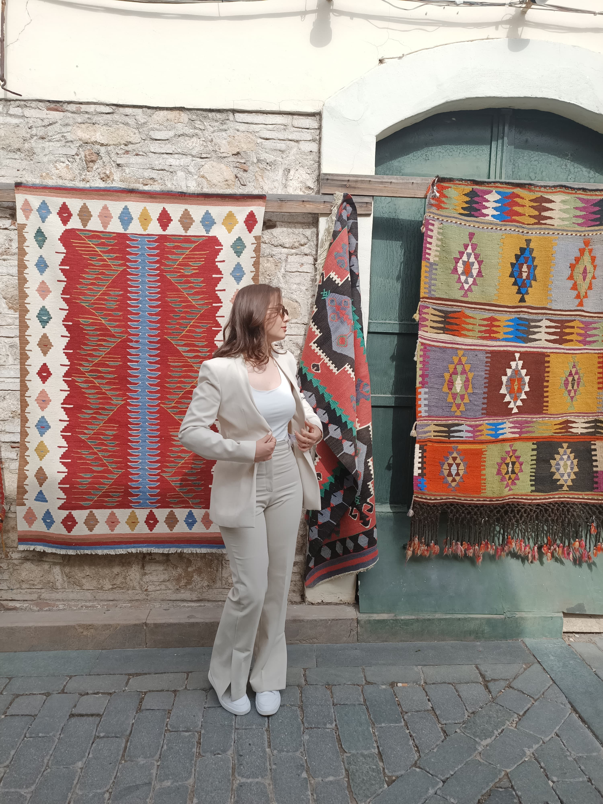
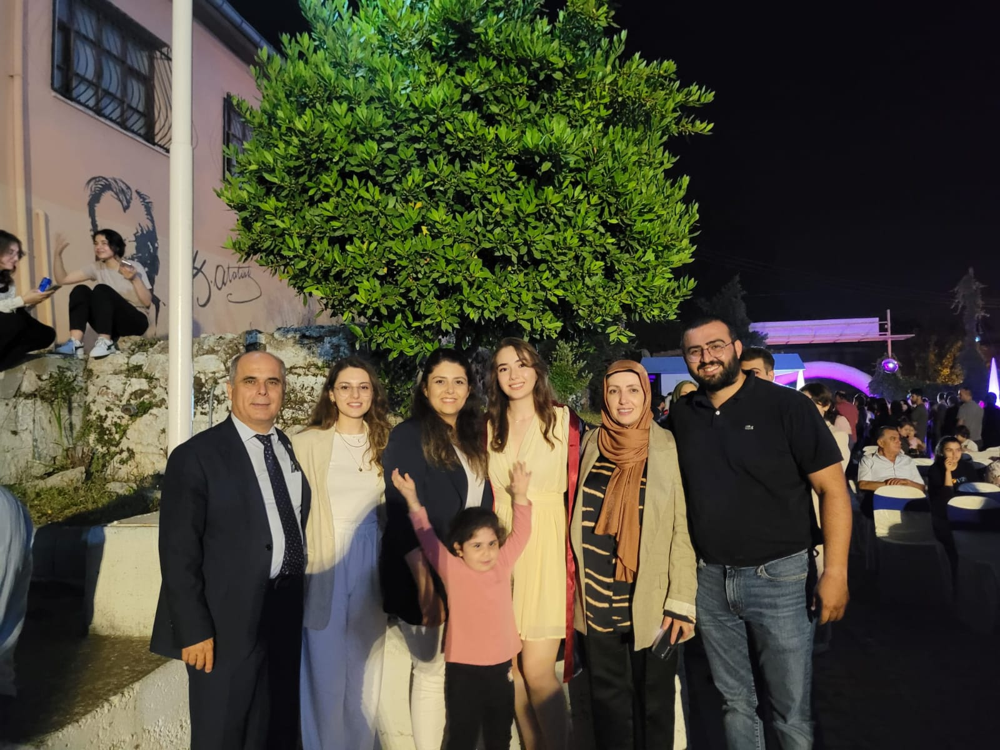
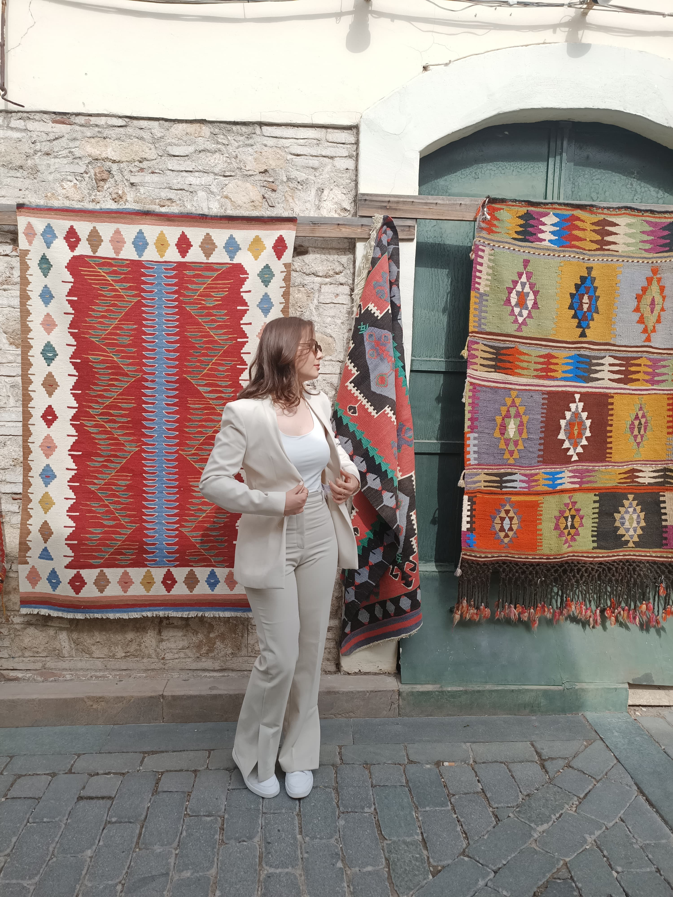
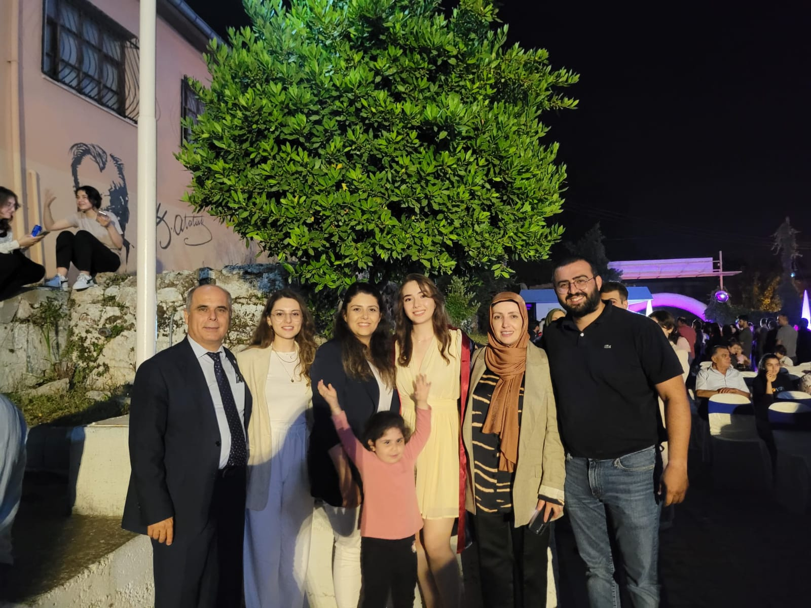

Osman Nuri Çınar Ortaokulu - ilkokul
-
Osman Nuri Çınar Ortaokulu - Ortaokul
-
Aksu Fen Lisesi - Lise
-
Sakarya Üniversitesi - Bilgisayar Mühendisliği
1. sınıf öğrencisi olarak eğitimime devam etmekteyim.
Merhaba, adım Münevver Sude soyadım İstekli. 10 Eylül 2004 tarihinde Antalya’da ailemin üçüncü çocuğu olarak dünyaya geldim. Annem aile sağlığı merkezinde ebe, babam ise vergi dairesinde memur olarak çalışıyor. İki ablam var. Büyük ablam ziraat mühendisi, küçük ablam ise Akdeniz Üniversitesinde diş hekimliği bölümünde okuyor.
Çok ilgili ve bilinçli bir evde büyüdüm. Her zaman okumaya, kendi ayaklarımın üzerinde durmaya teşvik edildim. İlkokul ve ortaokul eğitimimi Elmalı Osman Nuri Çınar Ortaokulunda tamamladım. Liseye geçiş sınavında iyi bir başarı elde ettim ve Antalya Aksu Fen Lisesini kazandım.
4 yıllık lise eğitimimin ilk iki senesi pandemi nedeniyle uzaktan eğitimle geçti. 11 ve 12. sınıfı yüz yüze okuduktan sonra liseden mezun oldum ve üniversite sınavına girdim. Sakarya Üniversitesi Bilgisayar Mühendisliği bölümünü kazandım. Şu anda 1. sınıf olarak öğrenimime devam etmekteyim.
İlkokuldan beri kitaplara, fen bilimlerine ve güzel sanatlara ilgim vardı. 2. sınıftayken ut kursuna başladım fakat ilerleyen zamanlarda öğretmenimin gitmesinden ötürü bırakmak zorunda kaldım ama hala amatör bir şekilde ut çalmaya devam etmekteyim.
Her çocuk gibi küçükken resimle ve sporla tanıştım ve kendimi bu konularda geliştirdim. Resimde, karakalem çalışmaya, akrilik boya tabloları yapmaya devam ediyorum; sporda, ortaokul yıllarımda voleybol oynadım, şuan eskisi kadar oynamasam da voleybolu severek ve ilgiyle takip etmeye devam ediyorum.
Ortaokulda ilk kez çocuklara yönelik kodlamayla tanıştım her ne kadar yapmak hoşuma gitse de sonrasında devam etmedim ama bu ilgimi ileriye taşıdım ve mesleğimi bu yönde seçtim.
Bugün Sakarya Üniversitesinde öğrenimime devam ederken kendimi geliştirmeye, sempozyumlara, eğitimlere katılmaya ve topluluklarda yer almaya devam ediyorum. İleride insanlara teknolojinin gücünü anlatmayı ve onları bilinçlendirmeyi amaçlıyorum.
Yaşamımın bu aşamasında, ailemin çabasının ve kendi çabamın beni getirdiği yeri görmek gururlandırıyor ve geleceğe umut ile bakmamı sağlıyor.
1. sınıf öğrencisi olarak eğitimime devam etmekteyim.
 


